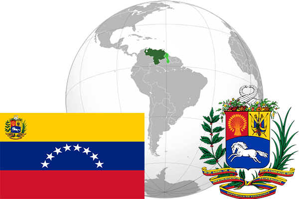

To`liq nomi: Venesuela Bolivar Respublikasi
Region: Janubiy Amerikaning shimoli
Qonunchilik shakli: Federativ respublika
Mustaqillik kuni: 5 iyul 1811-yil
Poytaxt: Karakas
Maydoni: 912,050 km²
Chegaradosh davlatlari: Gayana, Braziliya, Kolumbiya
Aholisi: 30 761 000 (2015-yil)
Aholi zichligi: 32 /км²
Aholining o`rtacha yoshi: 74,40 yil
Rasmiy tili: Ispan tili
Dini: Xristian
Pul birligi: Bolivar
Telefon prefiksi: +58
Internet domen: .ve
Xalqaro tashkilotlarga a`zoligi: BMT
Dengiz va okeanlarga chiqishi: Karib dengizi
YIM: Butun: $207.7 mlrd. (2017-yil)
Yirik shaharlari: Karakas, Marakaibo